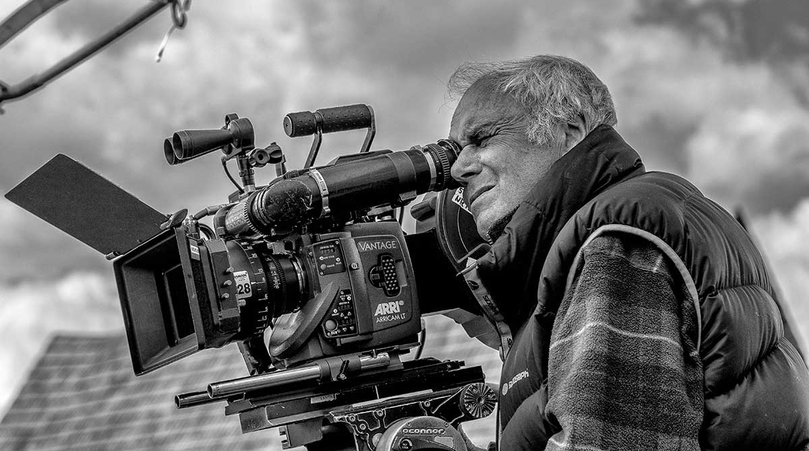
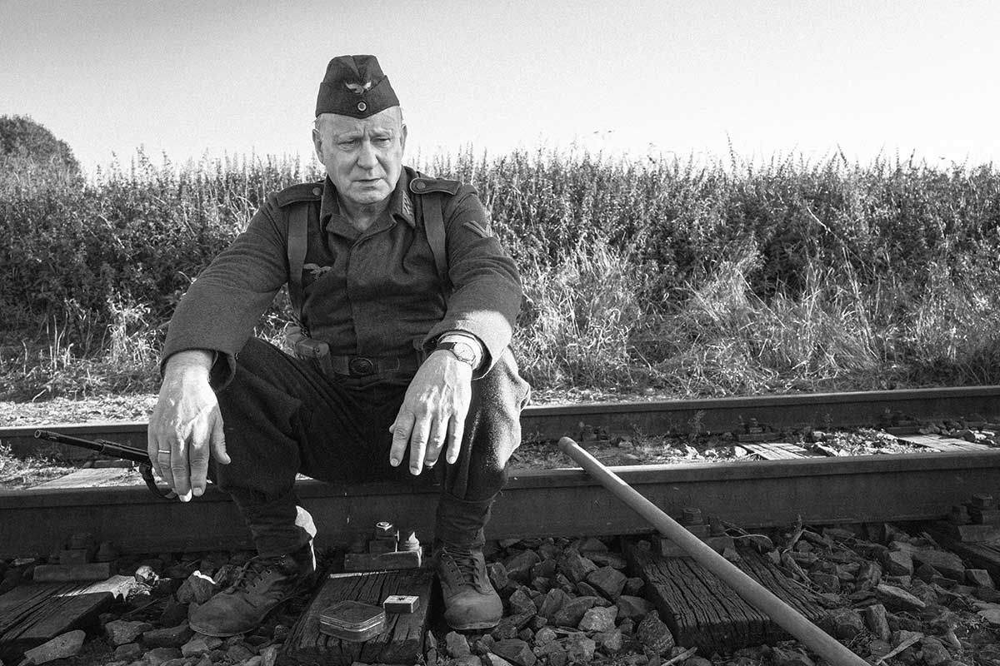
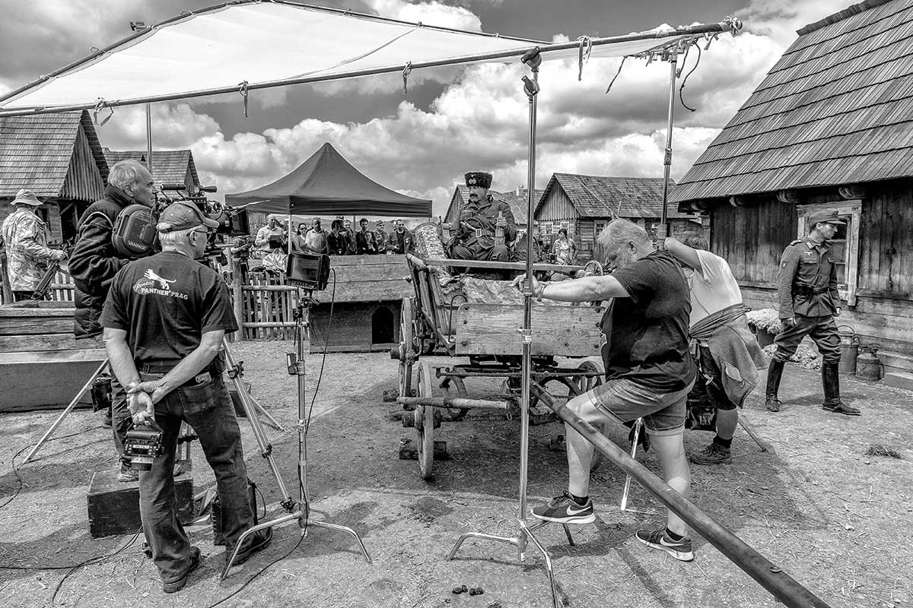
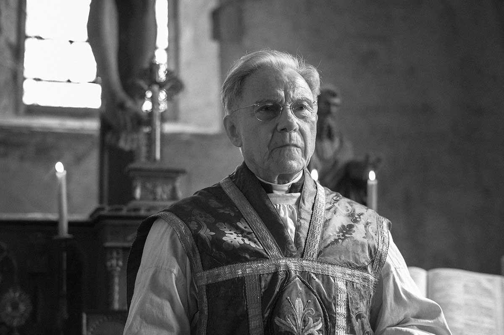
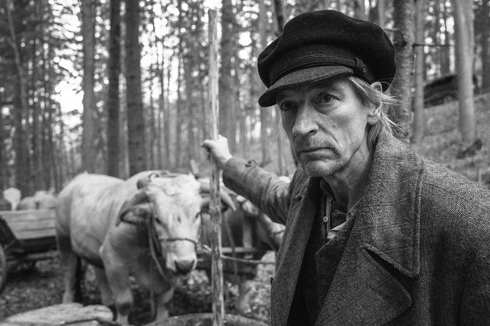

Apocalypse Then: Vladimír Smutný / The Painted Bird
Barry Pepper in “The Painted Bird.” © Jan Dobrovský.

Vladimír Smutný’s exquisite B&W photography on director Václav Marhoul’s traumatically beautiful The Painted Bird is a towering achievement and represents the veteran Czech cinematographer’s most personal work to date.
The Painted Bird, based on a controversial novel from notorious Polish writer Jerzy Kosinski, tells the story of a nameless boy wandering from one unnamed Eastern European village to another during the hecatomb of World War II. Every place he arrives at, the increasingly scarred protagonist witnesses different kinds of human depravity, from superstition-filled murders and mutilations to paedophilia and bestiality. At the 2019 Venice Film Festival, where the film had its international premiere and competed for the Golden Lion, some people left the screening room.
Needless to say, this is not an experience for the faint of heart. Less than two minutes in, there comes a scene of a helpless animal set on fire, squealing on the ground. What happens during the subsequent two-and-a-half hours is a harrowing test for the soul and the senses, a hellish odyssey into the dark side of the human nature. Yet the film’s eerily visual elegance combined with its elegiac tone of observing the world on the verge of an apocalypse makes the viewer sit and watch the presented horrors with a mix of disgust and awe.
Cinematographer Vladimír Smutný on the set of “The Painted Bird.” © Luděk Hudec.
The Painted Bird is a work that confronts humans with the unbearable inhumanness of humanity. It is important, then, to understand that it was a labour of love that required over a decade to bring to the screen.
“Václav told me about the idea of adapting Kosinski’s book in 2007. We started shooting in 2017 and ended in summer of 2018. One hundred days altogether,” states Smutný. The crew visited Slovakia, Poland, the Czech Republic and Ukraine, including the village of Svalovychi in which time had stood still since the war.
Stellan Skarsgård in “The Painted Bird.” © Jan Dobrovský.
“Our references were Tarkovsky’s Ivan’s Childhood and Andrei Rublev, Elem Klimov’s Come and See, Vláčil’s Markéta Lazarová and Němec’s Diamonds Of The Night, as well as B&W photographs from World War II,” says the DP.
The cinematographer’s partnership with Marhoul was symbiotic, with both filmmakers infusing the film with their personal style. “Every morning we tried to find a compromise between our ideas, bearing in mind that only the right kind of storytelling would communicate the emotions and the purpose of each scene,” says Smutný who was awarded Camerimage Bronze Frog for his work. “The B&W Cinemascope format, with actors standing close to the edge of the image, express anxiety, distress, fear, while the camera movement, including long dolly rides, provides an audience with the opportunity to contemplate what happens on and off the screen.”
Most of the shots are elegant and carefully composed, but once in a while there comes a handheld scene infusing the storytelling with subjectivity and immersing the viewer even more into the 20th century world of primordial instincts.
On the set of “The Painted Bird.” © Luděk Hudec.
Shooting this story without a wide colour range posed a number of challenges. “Good photography needs good light, which differs every day, but if you are privileged to shoot a film in continuity, like we were, you follow the evolution of images, movement, composition, light styles, and all the time you keep learning,” explains Smutný. “What is important in B&W is the aesthetic composition of lights and shadows, the rhythm of light and dark. The common mannerism of modern colour cinematography, depicting light with a hazy mist, would ruin the contrast in a B&W film.”
“I prefer high-contrast B&W photography with deep blacks, but when I worked on a forest scene where everything was green and soldiers were wearing green uniforms, there was no contrast. So I used a yellow filter to lighten up the green, thus increasing contrast of the dark areas within the shot. I also used red filter in a scene at the burnt-down house to enhance its dramatic nature – dark sky and white clouds,” continues Smutný who used natural light as much as it was possible.
Harvey Keitel in “The Painted Bird.” © Jan Dobrovský.
“The boy’s skin tone was particularly beautiful in such light. I got daylight through windows or holes in a thatched roof. The key light was never inside the room, and I did not set it up. I mostly used HMI 12 to 18kw, or sometimes ARRI M lights, as well as reflected light. Dispersed light was used only for interior day shots but I kept it local, and parts of the image were left black.”
That is why the cinematographer chose a variety of classic and modern film equipment to bring his and Marhoul’s striking vision to a cinematic life.
Julian Sands in “The Painted Bird.” © Jan Dobrovský.
“The negative stock was the old faithful, Kodak Eastman 5222, with an ARRICAM Lite camera, plus an ARRIFLEX 235 for the handheld scenes. Additionally, we used Red Monstro for special effect shots against a green screen,” says Smutný who tested Zeiss and Vantage Hawk lenses for the film. “Zeiss lenses had almost no distortion and there was beautiful sharpness to them, but I chose Hawk V‑Lite Optics because they have a style of their own. They had some distortion and were unfocussed along the top edges of the image, but we turned these minor technical shortcomings into an advantage.”
Smutný concludes: “Direct contact with the war and the ruined post-war world makes the boy lose his soul. The magnificence of the images of a world gone mad allowed for a beauty and expressiveness of B&W film. This is my magnum opus, probably the most important film in my career.”